원자력기사 (2014-09-21 기출문제)
1과목: 원자력기초
1. 유효증배계수 K가 1.000으로부터 1.001로 변했을 경우 상응하는 반응도는 얼마인가?
- 0.0001
- 0.001
- 0.01
- 0.1
(정답률: 알수없음)

2. 다음 방사성 붕괴 형태 중 원자핵의 중성자수가 감소하는 방사성 붕괴 형태가 아닌 것은?
- 알파붕괴
- 베타붕괴
- 감마붕괴
- 중성자붕괴
(정답률: 알수없음)
3. 다음 중 원자핵을 구성하고 있는 핵자들 간에 작용하는 핵력(Nuclear Force)에 대한 설명이다. 맞는 것끼리 연결된 것은?
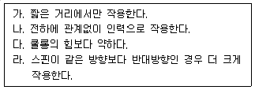
- 가, 다
- 가, 나, 다
- 가, 나, 라
- 나, 다
(정답률: 알수없음)
4. U235가 3% 농축된 우라늄 1gr에 U235의 원자 수는?(오류 신고가 접수된 문제입니다. 반드시 정답과 해설을 확인하시기 바랍니다.)
- 1.8×1019
- 1.8×1020
- 7.59×1019
- 7.59×1020
(정답률: 알수없음)
5. 다음 핵종 중 자기 자신은 핵분열을 일으키지 않고 중성자를 흡수하면 핵분열성 물질로 변하는 핵종은?
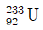
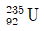
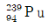
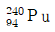
(정답률: 알수없음)
6. 핵연료 70톤이 장전된 원자로가 정격출력 3,500MWth, 이용률 75%로 400일간 운전할 경우 연료의 평균 연소도는?
- 12,000MWD/MTU
- 15,000MWD/MTU
- 18,000MWD/MTU
- 21,000MWD/MTU
(정답률: 알수없음)
7. 국내 운전 중인 CANDU 원자로에 대한 설명 중 틀린 것은?
- 핵연료는 수평으로 설치된 압력관 내에 장전된다.
- 정상운전 중에 핵연료를 교체한다.
- 냉각재는 경수, 감속재는 중수를 사용한다.
- 원자로 출력조절은 Liquid Zonce Controller를 사용할 수 있다.
(정답률: 알수없음)
8. 미임계 상태의 원자로 내에 초당 100,000개의 중성자를 방출하는 선원이 존재한다. 유효증배계수가 0.99이라면, 정상상태 원자로 내 독립선원과 핵분열 중성자를 포함한 총 중성자 생성률은?
- 107N/sec
- 2×107N/sec
- 3×107N/sec
- 4×107N/sec
(정답률: 알수없음)
9. 중성자의 핵의 비탄성 산란반응에 대한 설명 중 맞는 것은?
- 충돌 전후 총 운동에너지는 보존된다.
- 산란 후 핵은 여기상태로 존재한다.
- 저에너지 중성자가 무거운 질량의 핵과 반응할 때 주로 발생한다.
- 충돌 후 중성자는 핵에 포획된다.
(정답률: 알수없음)
10. 아래의 중성자 확산 방정식에서 중성자 누설을 나타내는 항은?
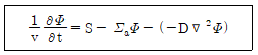

- S
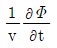
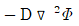
(정답률: 알수없음)
11. 다음 중 출력운전 중인 경수로의 냉각재 온도가 증가할 때 발생하는 현상으로 맞는 것은?
- 우라늄 연료의 중성자 흡수 감소
- 냉각재 중성자 감속능력 증가
- 유효증배계수의 증가
- 수용성 독물질의 중성자 흡수 감소
(정답률: 알수없음)
12. 다음 중 원자로의 출력이 변화하였을 때, 가장 빨리 반응도 궤환 효과를 주는 것은?
- 냉각재 압력
- 냉각재 온도
- 제논의 반응도 효과
- 사마리움의 반응도효과
(정답률: 알수없음)
13. 원자로가 일정한 출력으로 장시간 운전되다가 갑자기 정지하였을 때, 다음 중 원자로 내의 독물질인 Xe135, Sm149의 변화를 맞게 설명한 것은?
- Xe135의 농도가 증가하다가 충분한 시간이 경과 후 일정한 값으로 유지된다.
- Xe135의 농도가 감소하다가 충분한 시간이 경과 후 일정한 값으로 유지된다.
- Sm149의 농도가 증가하다가 충분한 시간이 경과 후 일정한 값으로 유지된다.
- Sm149의 농도가 감소하다가 충분한 시간이 경과 후 일정한 값으로 유지된다.
(정답률: 알수없음)
14. 핵반응 전후 보존법칙에 대한 설명 중 틀린 것은?
- 핵반응 전후 핵자수는 보존
- 핵반응 전후 하전량은 보존
- 핵반응 전후 총 운동량 보존
- 핵반응 전후 총 운동에너지 보존
(정답률: 알수없음)
15. 경수로의 제어봉 반응도 값(Rod Worth)에 관한 설명 중 틀린 것은?
- 제어봉 삽입위치에 따라 변한다.
- 독물질 농도에 따라 변한다.
- 인근 제어봉의 거리가 가까우면 제어봉 반응도 값은 작아진다.
- 노심의 온도가 높아지면 제어봉 반응도 값은 감소한다.
(정답률: 알수없음)
16. 원자핵읙 결합에너지에 대한 설명으로 맞는 것은?
- 원자핵 주변을 돌고 있는 원자핵과 결합함으로서 가지고 있는 에너지이다.
- 중수소 원자핵을 구성하고 있는 양자와 중성자를 분리하게 되면 중수소 원자핵의 결합에너지만큼의 에너지가 방출된다.
- 원자핵의 핵자당 결합에너지는 질량수(A)가 60 ~80 근처에서 가장 크다.
- 핵융합 반응에서 에너지가 생성되는 이유는 반응 전 원자핵들의 결합에너지의 합이 반응 후 원자핵의 결합에너지보다 더 크기 때문이다.
(정답률: 알수없음)
17.
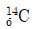
와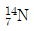
처럼 양자수와 중성자수는 서로 다르지만 질량수가 같은 핵종을 무엇이라 하는가?- 동위원소
- 동중성자핵
- 동중원소
- 핵이성체
(정답률: 알수없음)
18.
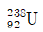
이 핵분열하여 두 개의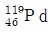
가 생성되었다. 이 핵분열 반응에 의해 방출되는 에너지는 얼마인가? (단,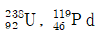
의 핵자당 평균 결합에너지는 각각 7.5MeV와 8.4MeV이다.)- 199MeV
- 204MeV
- 209MeV
- 214MeV
(정답률: 알수없음)
19. 단일 핵종으로 구성된 표적물에 중성자가 입사하는 실험을 하고자 한다. 표적물의 미시적 핵반응 단면적을 변화시키지 않는 것은 무엇인가?
- 표적 원자핵의 종류
- 표적물의 밀도
- 표적물의 온도
- 입사되는 중성자 에너지
(정답률: 알수없음)
20. 가압경수로와 같은 열중성자로에서 속중성자를 열중성자로 감속시키는 가장 큰 이유는?
- 원자로 밖으로 누설되는 중성자수를 줄이기 위해서
- 핵분열성 물질의 핵분열 반응 확률을 높이기 위해서
- 플루토늄의 생성량을 증가시키기 위해서
- 핵연료에 의해 공명흡수되는 중성자수를 줄이기 위해서
(정답률: 알수없음)
2과목: 핵재료공학 및 핵연료관리
21. 핵연료 펠렛 제조 시 1차 수소화 현상으로 인한 연료 손상을 방지하고자 품질관리 측면에서 조절하는 인자는?
- 펠렛 밀도
- 펠렛 내의 수분함량
- 펠렛 내의 등가 붕산량
- 우라늄 질량
(정답률: 알수없음)
22. 응력부식균열의 설명 중 틀린 것은?
- 비교적 작은 부식에 의해서도 균열을 초래
- 고온, 고압계통에서 물리적 응력집중 현상이 있을 경우 발생
- 부식의 진행속도가 느리고 금속표면에 균일하게 피막을 형성
- 이 종류의 부식 방지대책의 수단으로 응력수준을 낮추어 설계 개선
(정답률: 알수없음)
23. 중수로 개량 핵연료인 CANFLEX 설명 중 틀린 것은?
- 기존 연료대비 임계 채널출력 10% 이상으로 운전여유도가 향상
- 최대 선출력밀도는 15% 이상 감소
- 핵연료 방출 연소도는 3배 이상 증가
- 기존보다 증가된 43개의 연료봉으로 구성
(정답률: 알수없음)
24. 핵연료 농축공장에서 농축도 (A)%의 U235, (B)kg을 얻으려면 얼마의 천연우라늄이 필요한가? (종단폐기물을 C(%), 천연우라늄 중 의 구성비를 D(%)라고 가정한다.)
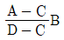
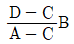
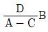
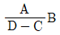
(정답률: 알수없음)
25. UO2 산화물 핵연료의 특성이 아닌 것은?
- 금속우라늄에 비해 열전도도가 낮다.
- 고온에서 이방성이다.
- 금속우라늄에 비해 용융온도가 높다.
- 고온에서 과잉산소를 함유한다.
(정답률: 알수없음)
26. 다음 중 방사화 부식생성물이 아닌 것은?
- Mn54
- Co60
- Sr89
- Zr95
(정답률: 알수없음)
27. 핵연료 건전성 평가방법을 설명한 것중 틀린 것은?
- I131/I133 : 파손부위의 크기 및 원인 추정
- Cs137/Cs133 : 손상연료 연소 평가에 따라 손상연료의 위치 파악
- Xe133, Xe138, Kr87 : 손상된 연료의 양 진단
- 초음파 탐상 : 운전 중 연속 또는 정기적으로 신속하게 측정
(정답률: 알수없음)
28. 사용 후 연료에 포함된 핵종 중 성분이 가장 높은 것은?
- U233
- U235
- U238
- Pu239
(정답률: 알수없음)
29. 사용 후 연료를 저장조로 이송도중 떨어뜨렸을 때, 손상되어 가장 많이 외부로 누출되는 핵종은?
- Kr85
- Sr90
- Rh1⑤
- Ba140
(정답률: 알수없음)
30. 화학 및 체적제어계통(CVCS)에서 주입되는 약품이 아닌 것은?
- 아질산나트륨(NaNO2)
- 하이드라진(N2H4)
- 과산화수소(H2O2)
- 수산화리튬(LiOH)
(정답률: 알수없음)
31. 연어의 회유, 해충의 상태와 농약살포 상태조사 등 환경분야에서 후 방사화 추적자 사용을 위한 필요조건과 거리가 먼 것은?
- 주변 환경에 존재하는 핵종
- 쉽게 방사화될 수 있는 핵종
- 염가로 획득할 수 있는 핵종
- 화학적으로 무해한 핵종
(정답률: 알수없음)
32. 다음에서 설명하는 우라늄 농축방법은?
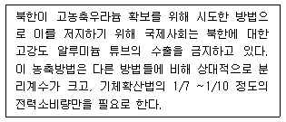
- 원심분리법
- 노즐분리법
- 레이저 분리법
- 화학교환법
(정답률: 알수없음)
33. 국내 경수로 핵연료에서 사용되는 핵연료 피복재에 대한 다음 설명 중 틀린 것은?
- Zircaloy-4 피복재는 Zr에 Sn, Fe, Cr을 첨가하여 내식성 및 강도를 개량한 것이다.
- LiOH이 함유된 냉각재에서 용존산소의 농도가 높으면 지르칼로이 부식이 크게 증가하므로 냉각재 내 용존산소량 및 pH 관리가 필요하다.
- 일반적으로 피복재의 부식률은 연소도 45GWD/MTU까지는 증가하지만, 45GWD/MTU이상에서는 큰 변화를 보이지 않는다.
- 핵분열 반응으로 생성된 요오드와 핵연료 피복재의 상호작용에 의해 응력부식균열이 발생할 수 있다.
(정답률: 알수없음)
34. 순환핵연료 주기에서 사용후연료의 재처리 이전 최소 수개월의 냉각이 필요한 원인에 대한 설명 중 가장 거리가 먼 것은?
- 반감기가 짧은 U237를 충분히 붕괴시켜 우라늄 회수공정을 쉽게 처리할 수 있다.
- 반감기가 짧은 Pu239를 충분히 붕괴시켜 플루토늄 회수공정을 쉽게 처리할 수 있다.
- 사용 후 연료 운반, 재처리 공정에서 유기용매에 손상을 주는 핵분열 생성물의 방사능 및 열을 감소시키기 위함이다.
- I131을 충분히 붕괴시켜 핵연료 재처리 공정에서 I131의 방출로 인한 문제점을 해결하기 위함이다.
(정답률: 알수없음)
35. 제염계수가 각각 10, 100인 액체폐기물 설비가 직렬로 연결되어 있을 때, 전체 계통의 액체 방사성 폐기물 제거효율은?
- 90%
- 99%
- 99.9%
- 99.99%
(정답률: 알수없음)
36. 모핵종의 반감기가 딸핵종의 반감기보다 매우 길 때를 영년평형이라 한다. 이 때 적용되는 공식 중 맞는 것은? (단, A는 모핵종, B는 딸핵종을 나타낸다.)
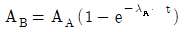
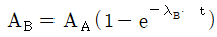
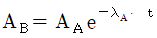
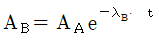
(정답률: 알수없음)
37. 다음 중 건설 중인 1단계 경주 방사성폐기물 처분장의 처분방식에 해당하는 것은?
- 단순 천층처분
- 공학적 천층처분
- 동굴처분
- 심지층처분
(정답률: 알수없음)
38. Mo99(반감기 66시간)와 Tc99m(반감기 6시간) 사이에 방사평형이 이루어지고 있다. Tc99m을 완전히 용출시킨 후 몇 시간이 경과되어야 방사능이 최고치에 도달되는가?
- 23시간
- 28시간
- 33시간
- 48시간
(정답률: 알수없음)
39. 다음 중 가압경수로형 원전의 1차계통 수화학관리 목적과 가장 거리가 먼 것은?
- 1차 계통 압력경계에서 재료 건전성 확보
- 핵연료 피복재의 건전성 보장 및 핵연료 설계 성능 달성
- 노심 외부의 방사선 준위 최소화
- 핵분열 생성물 발생의 최소화
(정답률: 알수없음)
40. 방사성물질의 안전관리에 대한 다음 개념 중 방사성폐기물의 자체처분과 가장 관계가 깊은 용어는?
- 규제 제외
- 규제 해제
- 일반인 선량한도
- 부지제염
(정답률: 알수없음)
3과목: 발전로계통공학
41. 다음 중 핵연료봉에서 냉각재로 열전달을 향상시킬 수 있는 방법으로 적합하지 않은 것은?
- 연료봉 내 헬륨 층을 감소
- 열전도도가 높은 피복재를 사용
- 부식 막의 두께를 얇게
- 침천 층의 두께를 두껍게
(정답률: 알수없음)
42. 원전 냉각재의 성질로 적합하지 않은 것은?
- 높은 비등점
- 높은 유도방사능
- 높은 열전달 특성
- 낮은 중성자 흡수단면적
(정답률: 알수없음)
43. 가압경수로형 비상노심냉각계통의 설계기준에 해당하지 않는 것은?
- 핵연료 피복재의 최고 온도
- 핵연료 피복재의 최대 산화
- 최대 수소 생성률
- 안전주입 최대유량
(정답률: 알수없음)
44. 원자로용기 재료의 요구조건에 대한 설명 중 틀린 것은?
- 기계적 특성과 피로 특성이 양호할 것
- 파괴인성이 우수할 것
- 중성자 조사취화가 잘 일어날 것
- 용접성 및 가공성이 우수할 것
(정답률: 알수없음)
45. 원전 증기발생기 2차측 압력증가를 유발시키는 과도상태가 아닌 것은?
- 주증기 배관 소형파단
- 한 개 유로의 주증기 차단밸브 닫힘
- 터빈부하 급감발
- 터빈정지
(정답률: 알수없음)
46. 정상운전 상태의 가압경수로형 원자로 핵연료봉에서 그림과 같은 분포로 열이 생성된다. 다음 보기 중 핵연료 피복재의 평균온도분포 Tc(Z)와 냉각재의 평균온도분포 Tf(Z)를 바르게 나타낸 것은?
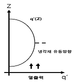
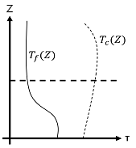
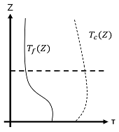
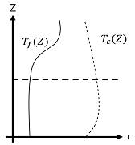
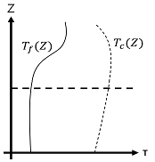
(정답률: 알수없음)
47. 가압경수로형 원자로 1차 계통의 압력강하는 700KPa, 높이 차가 없는 펌프 출입구에서의 냉각재 속도는 각각 11m/s, 9m/s, 냉각재 밀도는 700kg/m3, 중력 상수는 10m/s2일 때, 냉각재 펌프의 전 양정(Total Dynamic Head)는?
- 2m
- 100m
- 102m
- 104m
(정답률: 알수없음)
48. 가압경수로형 원전에 채택된 재순환형 증기발생기에 대한 설명으로 적절하지 않은 것은?
- 정상운전 시 증기발생기 순환비는 1보다 크다.
- 증기발생기 상부에 설치된 습분분리기 및 증기건조기를 증가시킨다.
- 증기발생기에서 과열증기가 발생된다.
- 증기발생기 U튜브는 1차, 2차계통 사이의 압력경계이다.
(정답률: 알수없음)
49. 가압경수로형 원자로의 노심 열설계 요건으로 틀린 것은?
- LOCA시, 첨두 피복재 온도는 1,204℃ 국부최대 피복재 산화돈느 17% 이하를 각각 유지해야 한다.
- 사고 시 핵연료 중심에 용융이 일어나서는 안된다.
- 정상운전 중 원자로 핵연료봉에서 비등은 허용되지 않는다.
- DNBR이 허용 한계치 이상이라는 것은 핵연료의 허용 설계한계를 초과하지 않는다.
(정답률: 알수없음)
50. 다음 중 원저에서 사용되고 있는 산화우라늄 핵연료의 온도에 따른 열전도도를 바르게 나타낸 것은?
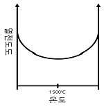
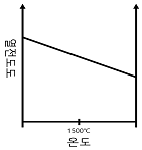
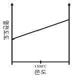
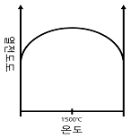
(정답률: 알수없음)
51. 가압경수로형 원전 내에서 비등 열전달 현상이 발생될 수 있는 경우에 해당하지 않는 것은?
- 냉각재가 냉각되어 체적이 감소하고 가압기 수위가 떨어지는 경우
- SBO 시 사용후연료 저장조 내 강제 대류순환이 멈춘 경우
- 원자로 정지 후 정지냉각계통에 의해 노심 내 잔열 및 붕괴열을 냉각시키는 경우
- LOCA 시 과열된 핵연료의 냉각을 위해 비상노심냉각계통에서 냉각수를 주입하는 경우
(정답률: 알수없음)
52. 가압경수로형 원전의 가압기 특성에 관한 설명 중 틀린 것은?
- 정상운전 시 가압기 내부는 포화상태의 증기와 물이 공존한다.
- 가압기 내 전열기 냉각재 유로에서 가압기로 밀려들어오는 미포화수를 가열한다.
- 증기영역에 설치된 분무노즐은 증기발생기 1차측 출구에 연결되어 있다.
- 가압기 액체영역은 밀림관을 통하여 고온관에 부착되어 있다.
(정답률: 알수없음)
53. 다음 중 열역학 제 2법칙과 관련된 설명이 아닌 것은?
- 저온에서 고온으로 열을 전달하기 위해서는 열기관이 필요하다.
- 랭킨사이클에서 총 에너지는 보존된다.
- 가역인 발전소에 열침원 온도가 일정한 경우 열생성원의 온도가 낮을수록 열효율은 낮아진다.
- 폐열이 없는 발전소를 만드는 것은 불가능하다.
(정답률: 알수없음)
54. 다음 동력변환계통의 T-S 선도로 적절한 것은?
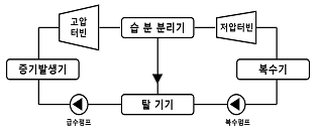
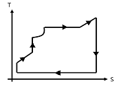
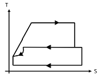
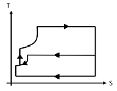
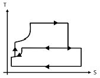
(정답률: 알수없음)
55. 가압경수로형 원자로 사고 시 사고전개에 영향을 주는 열원으로 기여도가 가장 작은 것은?
- 핵연료 붕괴열
- 핵연료 피복재 등 구조물의 산화반응에 따른 발열
- 원자로용기 등 원자로 구조물의 축적 열
- 냉각재 방사화
(정답률: 알수없음)
56. 가압경수로형 원전 노외계측기의 기능에 대해 설명 중 틀린 것은?
- 노내 계측기 교정에 필요한 자료를 제공한다.
- RV로부터 누설되는 중성자를 감시하여 출력준위를 측정한다.
- 원자로 고출력 정지신호 등 원자로 보호계통에 신호를 제공한다.
- 선원영역(기동채널)은 노외계측기에 해당한다.
(정답률: 알수없음)
57. 레이놀드(Re) 수는 “유체의 관성력과 점성력의 비”로 나타내는 무차원 수이다. 다음과 같은 조건을 가지는 관내 유동의 레이놀드 수와 유동 특성을 맞게 연결한 것은?
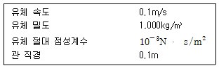
- 100, 층류
- 100, 난류
- 104, 층류
- 104, 난류문
(정답률: 알수없음)
58. 수평으로 높인 각각 직경이 D와 2D인 길이가 L인 두 배관을 따라 동일한 유량의 유체가 흐른다. 유동 마찰계수가 같다고 가정할 때, 마찰에 의한 압력강하의 비는?
- 4 : 1
- 8 : 1
- 16 : 1
- 32 : 1
(정답률: 알수없음)
59. 화학 및 체적제어계통(CVCS)의 기능에 대한 설명으로 옳은 것은?
- 가압기 수위 유지
- 냉각재 펌프 밀봉수 공급
- 안전주입계통 동작 시 저압 안전주입 유량 제공
- 냉각재의 화학적 상태, 방사능 준위, 붕산농도 조절
(정답률: 알수없음)
60. 가압경수로형 원전의 정상운전 기간 동안 1차 계통 내 냉각재의 평균온도가 가장 높은 지점은?
- 원자로 용기 출구
- 냉각재 펌프 출구
- 가압기 내부
- 증기발생기 입구
(정답률: 알수없음)
4과목: 원자로 안전과 운전
61. 다음 원자로 정상운전 중 냉각재펌프의 기능에 해당하지 않는 것은?
- 원자로 기동 시 냉각재를 가열하는 열원을 제공한다.
- 원자로 노심에서 증기발생기로 열을 전달한다.
- 냉각재의 수질을 정화하는 기능을 제공한다.
- 발전소 정상운전 중 가압기 분무 구동력을 제공한다.
(정답률: 알수없음)
62. 핵연료를 교체 장전하여 운전을 시작하면 노심의 반응도는 급격히 감소한다. 그 이유 중 가장 큰 것은?
- 연료의 연소
- 제논의 증가
- 냉각재 온도변화
- 사마리움의 증가
(정답률: 알수없음)
63. 원전 출력운전 중 발전기 전력부하가 갑자기 증가하였다. 이에 따른 원자로 출력 P, 냉각재 평균온도 T의 변화로 맞는 것은?
- P 증가, T 감소
- P 증가, T 증가
- P 감소, T 증가
- P 감소, T 감소
(정답률: 알수없음)
64. 다음 중 IAEA의 사고 고장등급(INES) 평가에 사용되지 않는 요소는?
- 심층방어 영향
- 방사성 물질 소외 영향
- 방사성 물질의 소내 영향
- 방사선 비상계획서 이행 여부
(정답률: 알수없음)
65. 다음의 발전소 계통 중 포화상태가 아닌 것은?
- PZR 내 Steam Space
- SG 내 Steam Space
- 고압터빈 내 Steam
- 저압터빈 내 Steam
(정답률: 알수없음)
66. 원전 안전관련계통에는 통상 같은 용량의 펌프가 여러 대 설치된다. 이는 다음 중 설계 개념 적용으로 맞는 것은?
- 고장 시 안전
- 다중성
- 독립성
- 다양성
(정답률: 알수없음)
67. TMI, 체르노빌, 후쿠시마 원전사고에 대한 설명 중 맞는 것은?
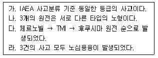
- 가, 나, 다
- 가, 나, 라
- 나, 다, 라
- 나, 라
(정답률: 알수없음)
68. 원전사고 시 방사성물질의 외부유출을 막기 위한 다중방어 개념에 해당되지 않는 것은?
- 핵연료 피복재
- 안전주입탱크
- 원자로 압력용기
- 원자로 격납건물
(정답률: 알수없음)
69. 정격열출력이 1,000MWt인 원전을 50% 출력으로 20일 동안 운전하였다. 이 때 발전소의 연소도는 얼마인가? (단, 연료 장전량은 25Ton으로 가정한다.)
- 200MWD/MTU
- 250MWD/MTU
- 400MWD/MTU
- 500MWD/MTU
(정답률: 알수없음)
70. 핵비등이탈률(DNBR)이 1.4에서 1.6으로 증가할 때, 열전달계수 변화 중 틀린 것은?
- 열전달계수는 감소한다.
- 핵비등이 적으면 적을수록 열전달을 작게 한다.
- DNBR이 증가하더라도 피복재 온도에 관한 한 안전하다.
- 열전달계수는 증가한다.
(정답률: 알수없음)
71. 다음 중대사고 현상 중 원자로 용기 외부에서만 발생하는 현상이 아닌 것은?
- 증기폭발
- 격납건물 직접가열
- 격납건물 과압
- 노심 용융물과 콘크리트 상호작용
(정답률: 알수없음)
72. 가압경수로 원전운전 중 안전제한치 설정항목이 아닌 것은?
- 핵비등이탈율
- 원자로 격납건물
- 선출력밀도
- 냉각재 압력
(정답률: 알수없음)
73. 가압경수로형 냉각재의 온도변화와 관련하여 바르게 설명한 것은?
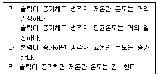
- 가, 다
- 나, 다
- 나, 라
- 나, 다, 라
(정답률: 알수없음)
74. 원자력 안전문화에 대한 설명 중 거리가 먼 것은?
- 안전에 대한 책임은 발전소장에게 있다.
- 종사자는 운전과 절차에 대해 항상 의문을 갖는 태도를 갖는다.
- 어떠한 일이 있어도 해당 절차서를 준수한다.
- 안전과 관련된 제안 또는 제의는 언제든지 할 수 있어야 한다.
(정답률: 알수없음)
75. 다음 사고 중 냉각재 압력이 증가되는 사고로 맞는 것은?
- 냉각재 상실사고
- 증기발생기 튜브 파열사고
- 모든 급수 상실사고
- 소외 전원 상실사고
(정답률: 알수없음)
76. 다음 운전변수의 핵비등이탈율(DNBR)과의 상관관계에 대한 설명 중 틀린 것은?
- 냉각재 온도가 감소하면 DNBR이 증가한다.
- 가압기 압력이 감소하면 DNBR이 감소한다.
- 냉각재 유량이 증가하면 DNBR이 증가한다.
- 가압기 수위가 증가하면 DNBR이 증가한다.
(정답률: 알수없음)
77. 다음 중 원전 운영에 따른 고유안전성과 공학적 안전설비(ESF)에 대한 설명 중 틀린 것은?
- 고유안전성이란, 핵연료가 가지고 있는 특성으로 부(-)의 반응도 궤환효과가 이에 해당된다.
- 공학적 안전설비란, 안전주입계통 등 노심을 보호하기 위한 설비이다.
- 고유안전성이란, 노심의 특성으로서 제논, 사마리움 같이 중성자 흡수물질이 우라늄 붕괴와 동시에 생기는 것을 의미한다.
- 안전주입탱크는 공학적 안전설비에 해당하는 기기 중 하나이다.
(정답률: 알수없음)
78. 다음 중 제어봉의 기능 또는 영향과 관련이 없는 것은?
- 중성자 생성
- 중성자 흡수
- 중성자속의 변화
- 중성자 누설율 변화
(정답률: 알수없음)
79. 원전의 안전관련계통은 사고예방 및 사고완화 기능을 갖는다. 이에 해당되지 않는 것은?
- 원자로 보호계통
- 원자로 정지계통
- 주급수 계통
- 비상노심냉각계통
(정답률: 알수없음)
80. 원자로 운전주기가 1분이고 현재 원자로출력이 5MWth일 때, 2분 후의 원자로 출력은?
- 20 MWth
- 37 MWth
- 54 MWth
- 71 MW th
(정답률: 알수없음)
5과목: 방사선이용 및 보건물리
81. 다음 방사선 피폭 중 개입(Intervention)이 필요한 것은?
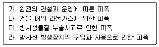
- 가, 나
- 나, 다
- 가, 라
- 나, 라
(정답률: 알수없음)
82. 감마선을 방출하는 어떤 밀봉 점선원으로부터 30cm 거리에 GM계수기를 두고 측정한 결과 12,000cpm이었다. 점선원으로부터 10cm 거리에서 측정하였다면 예상되는 계수율은 얼마인가? (단, GM계수율의 불감시간은 200μs이다.)
- 1,004cps
- 1,109cps
- 1,362cps
- 1,872cps
(정답률: 알수없음)
83. 다중 파고분석기(MCA) 회로와 연결하여 감마핵종분석이 가능한 검출기는?
- 전리함
- GM 검출기
- 액체 섬광검출기
- Nal(Tl) 검출기
(정답률: 알수없음)
84. 1MeV의 감마선이 알루미늄(밀도 : 2.7g/cm3)에 입사하였을 때 최초로 알루미늄 원자와 상호작용을 일으키기까지 통과하는 거리(cm)의 평균치로 가장 적절한 것은? (단, 1MeV 감마선의 알루미늄에 대한 질량감쇠계수는 0.061이다.)
- 0.61
- 1.6
- 6.1
- 16
(정답률: 알수없음)
85. 다음 괄호 안에 들어갈 수치로 적절히 연결된 것은?
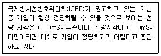
- 100, 1
- 100, 10
- 500, 20
- 500, 50
(정답률: 알수없음)
86. 어떤 작업장의 공기 중 방사성 오염농도가 80KBq/일 때, 이 작업장에서 주당 작업 가능시간은? (단, 유도공기중농도(DAC)는 40KBq/이고, 연간 선량한도는 20mSv이다.)
- 8시간
- 20시간
- 40시간
- 80시간
(정답률: 알수없음)
87. Sr90에 의한 내부피폭과 관련하여 가장 연관이 깊은 것은?
- 뼈
- 갑상선
- 폐
- 근육
(정답률: 알수없음)
88. 인체가 같은 흡수선량을 받았을 때 가장 큰 피해를 일으키는 방사선은?
- 엑스선
- 알파선
- 베타선
- 감마선
(정답률: 알수없음)
89. 방사선의 확률적 영향에 관한 다음의 설명 중 맞는 것끼리 연결된 것은?
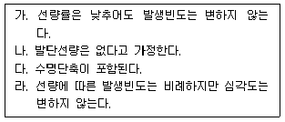
- 가, 나
- 가, 다
- 나, 다
- 나, 라
(정답률: 알수없음)
90. Rn22237GBq의 질량은 약 얼마인가? (단, Rn222의 반감기는 3.825일이다.)
- 6.5×10-11g
- 7.52×10-11g
- 6.5×10-6g
- 7.52×10-11g
(정답률: 알수없음)
91. 물리적 반감기가 30일인 방사성 핵종이 체내의 한 장기에 흡착 90일 후에 그 장기에서의 방사능을 측정하였더니 처음의 1/10으로 감소되었다. 이 핵종의 생물학적 반감기는 약 얼마인가?
- 150일
- 220일
- 280일
- 340일
(정답률: 알수없음)
92. 다음 중 일반적으로 자연방사선에 의한 피폭 중 방사선 방호의 대상에 해당되지 않는 것은?
- 제트여객기 운항 승무원이 우주선의 강도가 높고 고공비행 시 받는 피폭
- 규제기관 권고에 따라 라돈의 주의가 필요한 작업 장소에서 작업
- 대기권 내의 핵실험에 의한 방사성 낙진에 의한 피폭
- 규제기관이 인정한 양의 방사성물질을 포함한 물질의 사용과 저장
(정답률: 알수없음)
93. 다음 중 기체충전형 검출기에서 입사 방사선의 에너지에 비례한 계측신호의 크기의 선형성이 나타나는 영역을 모두 고른 것은?
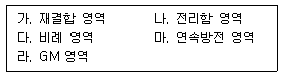
- 가, 나
- 나, 다
- 다, 라
- 라, 마
(정답률: 알수없음)
94. 다음 중 3MeV 이상의 고에너지 베타선을 차폐하기 위한 방법으로 가장 효과적인 것은?
- 원자번호가 높은 물질로 차폐한다.
- 원자번호가 낮은 물질을 앞에 두고, 그 뒤에 원자번호가 높은 물질을 두어 차폐한다.
- 원자번호가 높은 물질을 앞에 두고, 그 뒤에 원자번호가 낮은 물질을 두어 차폐한다.
- 공기 이외의 물질은 이차적인 방사선을 발생시키므로 가급적이면 공기를 통해 자연적으로 차폐하는 것이 좋다.
(정답률: 알수없음)
95. 다음 중 ICRP-60과 ICRP-103의 권고기준에서 방사선 가중인자 값이 다른 것은?
- 전자
- 광자
- 알파 입자
- 광자
(정답률: 알수없음)
96. 다음 중 GM계수기에 대해 설명한 것 중 틀린 것은?
- 발생하는 전류펄스는 1차 전자수에 무관하며 계수기의 크기나 가스압력 등으로 결정되어 비슷한 크기를 가진다.
- 기체 증폭도는 109정도이다.
- 불감시간은 수백 μs이다.
- 에너지와 방사선의 종류 판별이 가능하다.
(정답률: 알수없음)
97. 섬광검출기 검출시스템에 순서로 맞는 것은?
- 방사선 흡수 → 광전자 방출 → 섬광발광 → 광전자 증배 → 계수
- 방사선 흡수 → 광전자 방출 → 광전자 증배 → 섬광발광 → 계수
- 방사선 흡수 → 섬광발광 → 광전자 방출 → 광전자 증배 → 계수
- 방사선 흡수 → 섬광발광 → 광전자 증배 → 광전자 방출 → 계수
(정답률: 알수없음)
98. ) 축적인자(Build-up Factor)에 대한 설명 중 틀린 것은?
- 차폐물질을 투과하는 감마선의 에너지가 균일한 평행선속일 경우 적용한다.
- 두꺼운 차폐물질의 경우 한 번 산란된 선속에서 소실한 감마선이 다시 처음 비충돌 감마선속에 합류하는 비율이 커지므로 이를 보정하기 위한 계수이다.
- 균일한 감마선의 가느다란 평행선속이 얇은 물질에 입사할 경우 축적인자는 1에 가깝다.
- 축적 인자의 값은 1차 감마선 에너지, 선속의 퍼짐 및 물질의 밀도 및 두께에 의존한다.
(정답률: 알수없음)
99. 시료를 10분간 측정하여 40,000cpm을 얻고 백그라운드를 30분간 측정하여 5,400cpm을 얻었다면 95% 신뢰수준에서 순계수율은 약 얼마인가?
- 3,790 ± 39.4cpm
- 3,790 ± 47.2cpm
- 3,820 ± 47.2cpm
- 3,820 ± 47.2cpm
(정답률: 알수없음)
100. 0.5MeV의 감마선을 납(Pb)으로 차폐하여 방사선 강도를 1/100으로 줄이려면 약 몇 반가층이 필요한가?
- 3.32 HVLs
- 6.64 HVLs
- 14.4 HVLs
- 33.2 HVLs
(정답률: 알수없음)